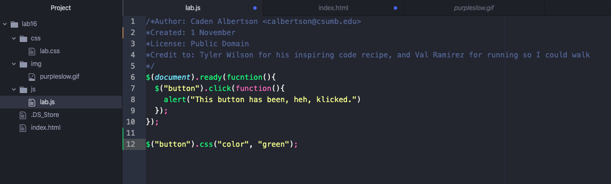

Lab 16: Library & Intro to jQuery
Challenges
No big challenges here, jQuery is hecking amazing and so much easier to work with.
Results
An index that includes a button that's made with jQuery that is pleasantly green and gives an alert message when you click it.
This what I coded in Atom.
